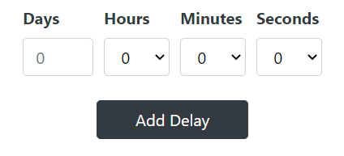
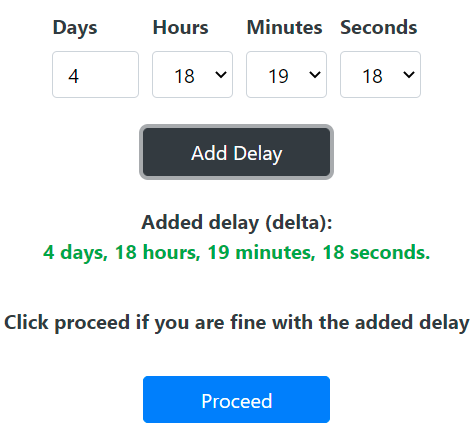

In this tab the user can delays to the activities. These delays are then added to each trace that is
present in the combination/variant displayed. Hence we will now have successfully converted a
partial order into a complete order.
The delays can be added using the provided input fields:

The following section will show the webpage before and after clicking the 'Add Delay'
button:
Before adding delay:
After adding delay:

The webpage displays the added delay in green as seen in the above image. This delay is called
delta. A multiple of this delta is added accordingly using an algorithm to make sure all the
activities
now have unique time stamps (e.g., +1 delta, +2 delta). The amount of added delta can also be
visualized in the image.
Further Steps:
If the user is happy with the added delays, they can click on the
proceed button,
which will automatically redirect the application to the
Final Order tab. This tab displays
the combination and all traces to which the delay was added and also displays the respective time
stamps. The user also has the option to save and export the modified event log.